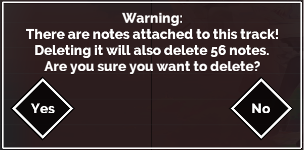
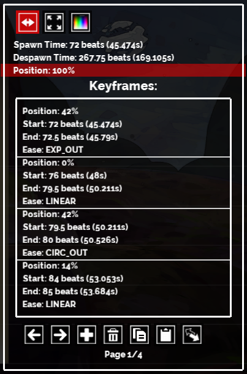
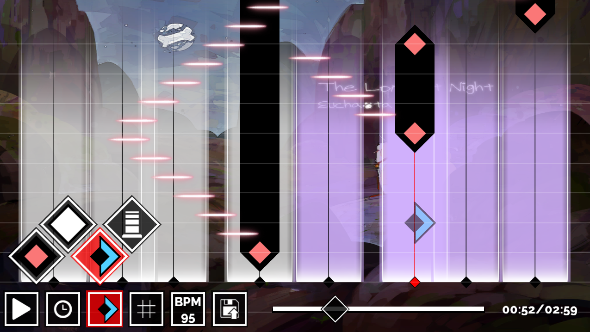
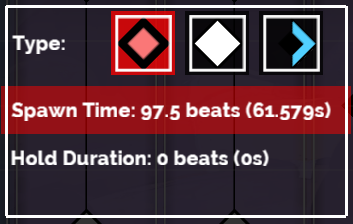

Program Download and Source: Github
By AndrewFM
Starting a new Project
In order to start a new project, start by navigating into the ActiveProject folder, and then creating a new subdirectory in there for your song. At minimum you need to place the following file into the folder:- The audio file for the song. This should be a .wav file whose name starts with "song_".
Optionally, you can also add any of the following into your subdirectory:
- A background image for the song. This should be a .png file whose name starts with "image_", and it should be 1024x1024 pixels large.
- A thumbnail image for the song. This should be a .png file whose name starts with "image_thumbnail", and it should be 256x256 pixels large.
- A preview track for the song. This should be a .wav file whose name starts with "song_pv", and it should be 20 seconds long.
Note that the length of your "song_" audio file will be the length of your project's song. If you want your song to be shortened, you need to edit the file with an audio editor.
Boot up the program and you should see the song you added in the list of projects. Each project is three beatmaps in one... one for Easy difficulty, one for Hard, and one for Special. Select your song, then select the difficulty that you'd like to start building, and hit 'Edit' to enter the main editor interface.
General Interface and Tools
From left to right, the tools are:
- Play/Pause: Resume or pause playback of the song. While the song is paused, the interface enters edit mode. While the song is playing, edit mode is disabled.
- Keyboard Shortcut: Spacebar
- Playback Time: Change the playback speed of the song to make it slower/faster. Useful for calibration and tweaks.
- Keyboard Shortcuts:
- 1 Key - 0.25x Playback Speed
- 2 Key - 0.5x Playback Speed
- 3 Key - 1.0x Playback Speed
- 4 Key - 2.0x Playback Speed
- Editing Mode: Change which type of note is currently being placed, or change between note editing mode and track editing mode.
- Keyboard Shortcuts:
- Z Key - Place Click Notes
- X Key - Place Slide Notes
- C Key - Place Swipe Notes
- V Key - Enter Track Editing Mode
- Grid Snapping: Change the grid snapping/time signature used in edit mode. This controls the increments at which notes are placed, and the increments at which
the tracks are scrolled. Anything time related in the interface and edit mode is snapped to this grid.
- Keyboard Shortcuts:
- Shift + 1 Key: Turn off the Grid
- Shift + 2 Key: 16 Beats per Measure
- Shift + 3 Key: 8 Beats Per Measure
- Shift + 4 Key: 4 Beats Per Measure
- Shift + 5 Key: 2 Beats Per Measure
- Shift + 6 Key: 1 Beat Per Measure
- Scroll Speed: Change the speed at which the notes scroll down along the tracks. This is a visual change only, it does not affect the timings of the song at all.
- Audio Assistance: Provides a few audio guide tools:
- Metronome: When this is enabled, a click will be heard every time one beat elapses.
- Hit Sounds: When this is enabled, a sound will play whenever a note on a track intersects with the play line.
- Note Quantization: Colors the click notes different colors depending if they fall on-beat, on half-beat, on quarter-beat, etc.
- Beats Per Minute: Adjusts the BPM value for the song. If this value is not correct, then the time signature grid (and thus, the notes you place) will be out of sync with the beats in the song. Calibrating this value is the very first thing you should do before starting creating a beatmap for your song. Performing this calibration is explained in the next section.
- Save: Saves all of your edits to disk. Note that this will overwrite your previous save files every time. If you want to keep periodic backups, you'll need to manually backup the ActiveProjects folder from time to time.
- Scrubber: This bar shows the current playback progress through the song, and allows you to navigate to any time in the song by clicking and dragging the scrubber.
- Loop Point: You can right-click the scrubber to set a loop point at its current location. Once the loop point is placed, the scrubber can be jumped back to that position at any point by pressing the Enter key, or by pressing the Middle Mouse Button, or by right-clicking the Play button.
- While the song is paused, you can use the Arrow Keys/WASD keys, or the Scroll Wheel on the mouse to frame advance/rewind the scrubber. Hold down the Shift key to advance the time at a faster rate.
- Timer: The current song time. The number on top is the time in seconds, the number on bottom in parentheses is the cumulative beat count.
Setting the BPM
Click on the BPM button to enable BPM editing mode. While active you can use the Scroll Wheel on the mouse, or the Arrow Keys/WASD Keys to edit the value of the BPM. Hold down the Shift key to scroll the value at a faster pace. (This is the standard control scheme for editing any numeric values in the editor)While BPM editing mode is enabled, if you start playing the song, the screen will pulse at the current BPM rate that you have set. Adjust the BPM value until the pulsing rate is perfectly in sync with the music. The playback speed options and the metronome can be helpful with this calibration.
When done, click the BPM button again to exit BPM editing mode.
Track Editing Mode

Track Editing mode allows for the adding, deleting, and editing of tracks, which are the vertical columns that notes scroll over.
- To add a new track, hold down the Left Mouse Button while also keeping the Shift key held down through the whole process. A pending track will appear over the mouse's position (in the screenshot above, the red track in the middle is the pending track, while the others are actual tracks that had previously been added). Drag the pending track to the position you want it to be located at, then let go of the left mouse button to finalize its position and add the actual track.
- To delete a track, press the Delete button while hovering over a track, or right click on a track while also holding down the shift key. If you try to delete a track that currently has notes at it, the warning below will be displayed. Be very careful as the editor does NOT have an undo feature. Anything you delete cannot be recovered.

 The track window is divided up into three different tabs, each of which looks and behaves the same. These tabs are switched between using the three buttons at the top left of the window. Each tab is used to modify a different attribute about the track... from left to right, they are Position, Scale, and Color.
Use the left mouse button on the different fields in the window to select them from editing. Each tab has three main values:
All three of these value types can be animated over time. This is the purpose of the Keyframes section of this editing window. Each keyframe defines a new value to animate towards, the time the animation should start, the time the animation should end, and the transition style between the two values. Note that the value in a keyframe is the value the track will be at once it reaches the End time of the keyframe. The buttons at the bottom of the window are used for working with the keyframes. From left to right, they are:
|
Note Editing Mode
Set the Editing Mode selection to any of the other options other than track, to enter note editing mode. This mode allows for the adding, deleting, and editing of notes onto any of the tracks you've placed down.
- To add a new note, hover you mouse over any of the tracks, and a ghost image of the note will appear. Left Click to place the note down.
- To delete a note, press the Delete button while hovering over a note, or Right Click on the note.

The three buttons on the top will change which type of note this is. The value fields below will change attributes about the note:
- Spawn Time: The time in the song when this note needs to be tapped/swiped by the player.
- Hold Duration: Only available for click notes. If this is set to a value other than 0, then the click note becomes a hold note. If you want to make a hold note that moves around, you need to keyframe the track's position. See the previous section on track editing above.
- Direction: Only available for swipe notes. Lets you select whether it should be swiped to the left, or swiped to the right.
Editing Song Info
After saving your song at least once, navigate back to your project's subdirectory on your harddrive, and there will be a new file called "info_song.txt". Open this file up in a text editor to edit the information about your song:
{
"info":{
"version":"1.04",
"name":"The Song Name",
"author":"The Author",
"bpm":155,
}
,"level":{
"easy":1,
"hard":1,
"extra":1
}
}
- version: This is the version of the editor your song was last edited with. Don't modify the value of this.
- name: The title of the song. Make sure the name is between double quotes, as shown.
- author: The author of the song. Make sure the name is between double quotes, as shown.
- bpm: The BPM value of your song. Best to use the in-editor tools to properly calibrate this value.
- easy: The level of the song on Easy mode. Set this to any whole number greater than zero.
- hard: The level of the song on Hard mode. Set this to any whole number greater than zero.
- extra: The level of the song on Special mode. Set this to any whole number greater than zero.